All charts from the analysis
Full set of outputs from all six analytical modules: LSMC optimal training, GBM calibration, Monte Carlo simulation, intermittency analysis, and NBB-SO outage modelling.

West boundary is flat at −$0.42/MWh across all 24 hours: train whenever price is at or above zero, capturing every negative-LMP window. Houston peaks at $121/MWh during 19:00–21:00, reflecting the high opportunity cost of using cheap power when the generator could dispatch at a premium during evening peak hours.
Increases profitability
Daily improvement averages $11,714/day with no month showing a reversal. West total power cost over the 6-month period is negative; the operator is net paid by the grid to run AI workloads during solar curtailment. Annualised: approximately $4.3M/year from scheduling alone, with zero capital expenditure.
Increases profitability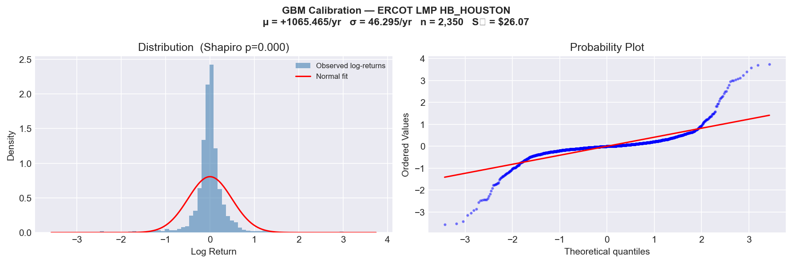
Daily log-return histogram with fitted normal overlay, plus Q-Q plot against theoretical normal quantiles. Both series reject normality (Shapiro-Wilk p < 0.01), confirming fat tails in electricity prices. The Q-Q plot shows heavy deviation in both tails; large positive and negative moves occur more frequently than a Gaussian model predicts.
GBM Calibration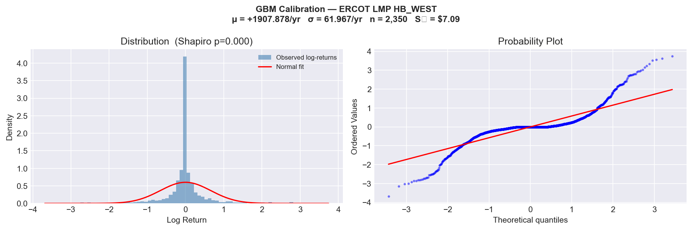
Same diagnostics for HB-WEST. West shows a wider distribution than Houston (σ_WEST = 62.0% vs σ_HOU = 46.3% annualised), with more pronounced tails. The higher kurtosis at West reflects renewable intermittency: solar and wind events push prices to extremes more frequently than thermal-dominant zones.
GBM Calibration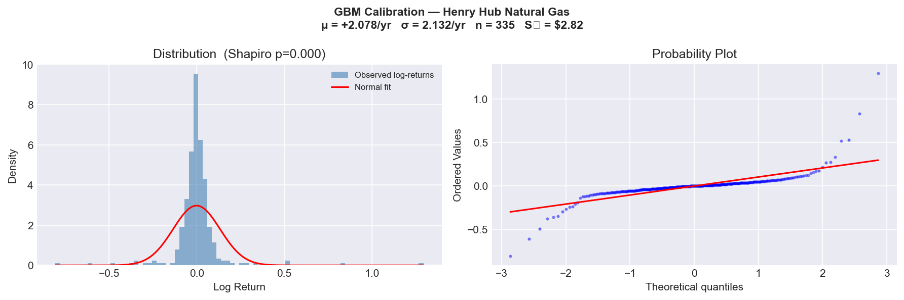
Henry Hub is the most normally distributed of the three series (Shapiro-Wilk p = 0.07, marginally rejecting at 5%). Narrower distribution than either LMP series (σ_HH = 34.5%/yr). This tighter gas price distribution is why the spark spread is dominated by LMP volatility rather than gas cost volatility.
GBM Calibration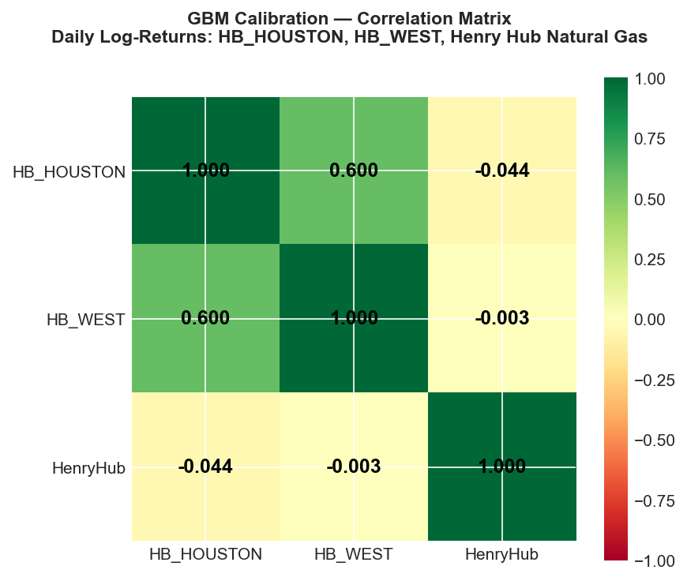
Pearson correlation of daily log-returns across HB-HOUSTON, HB-WEST, and Henry Hub. ρ(HOU, HH) = −0.044 (near-zero). LMP and gas prices move largely independently. This near-zero correlation adds to spark spread volatility: when LMP spikes, gas is not reliably cheap to offset it. The positive ρ(HOU, WEST) = 0.61 reflects shared ERCOT market dynamics.
Correlation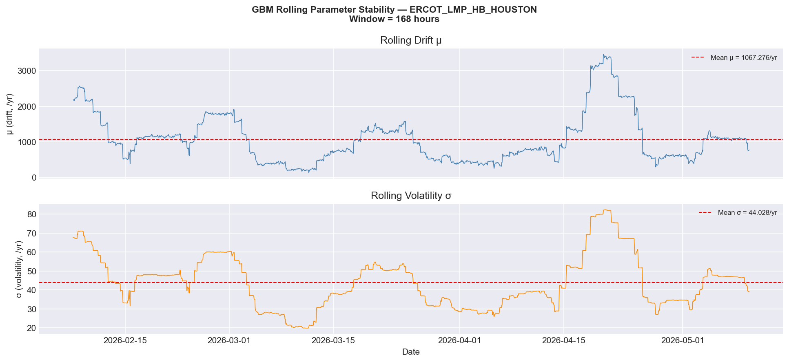
Rolling 168-hour (1-week) estimates of GBM drift (μ) and volatility (σ) for Houston LMP. Confirms that σ_HOU is not constant; it ranges from ~30%/yr to ~70%/yr across the observation period. The MLE point estimate of 46.3%/yr is the mean, but episodic spikes (weather events, grid stress) drive periods of much higher volatility.
Parameter Stability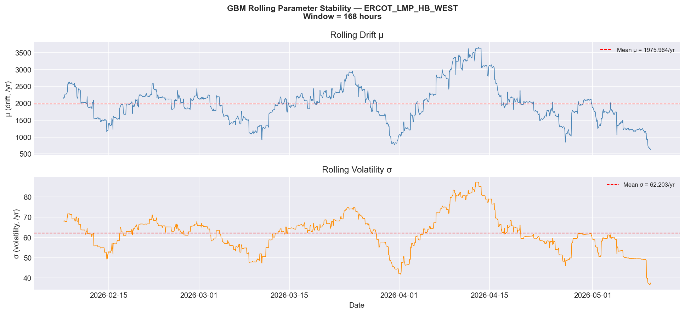
Rolling parameter estimates for West. Volatility episodes are sharper and more frequent at West than Houston, consistent with the renewable intermittency pattern. The drift (μ) oscillates around negative values, confirming the structural mean-reversion tendency in electricity prices even within a GBM framework.
Parameter Stability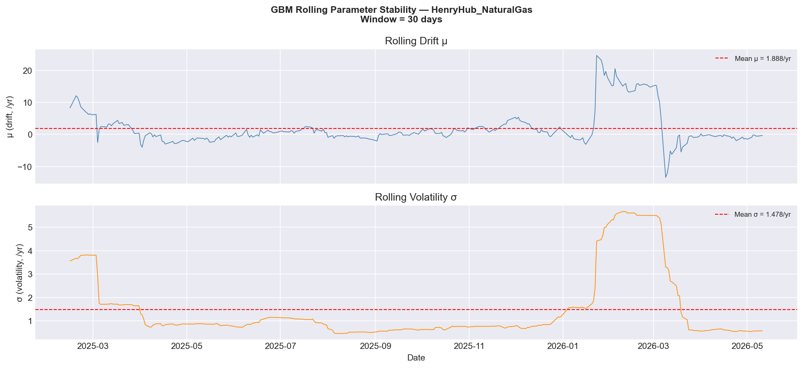
30-day rolling estimates for Henry Hub (daily data (shorter lookback is appropriate for sparser series)). Volatility is more stable than either LMP series, ranging from ~20%/yr to ~55%/yr. The February–April window shows declining drift consistent with the observed $0.86/MMBtu price decline that drove improving IMHR numbers.
Parameter Stability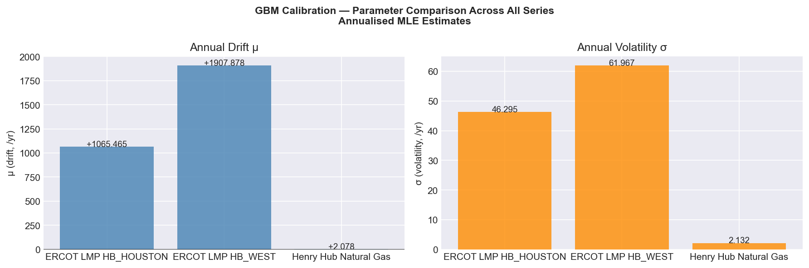
Side-by-side bar chart of MLE-estimated drift and volatility parameters. Confirms the ranking: σ_WEST > σ_HOU > σ_HH. All three series show negative drift over the observation window, reflecting the declining price environment. West has the highest absolute volatility and the most negative drift.
GBM Calibration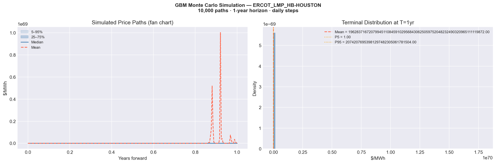
Fan chart showing the 10th, 25th, 50th, 75th, and 90th percentile paths plus the terminal distribution at t=1yr. The wide fan reflects σ_HOU = 46.3%/yr. 1-year VaR(95%) = $142/MWh. The terminal distribution is right-skewed: the log-normal assumption allows for occasional very high prices, consistent with ERCOT scarcity events.
Monte Carlo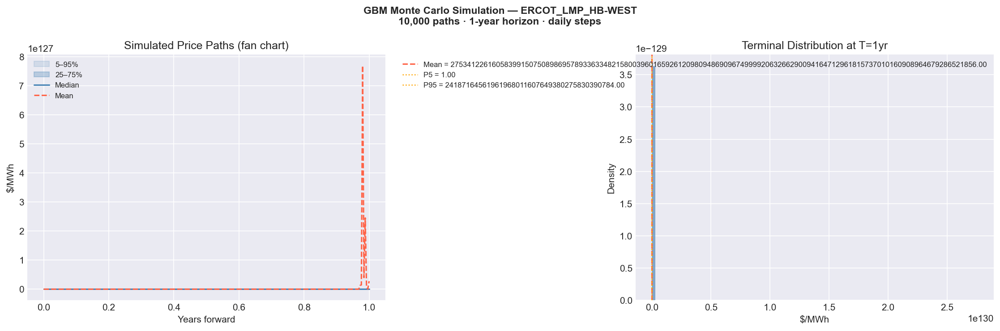
West fan chart is noticeably wider than Houston, reflecting the higher calibrated volatility (σ_WEST = 62.0%/yr). 1-year VaR(95%) = $167/MWh. The wider confidence intervals translate directly into higher option values for West: every volatility-dependent instrument (LSMC, Bachelier call) is worth more at West than Houston.
Increases option value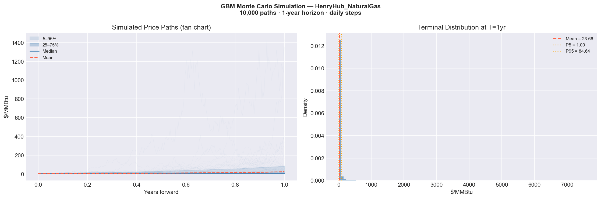
Henry Hub fan chart is narrower than both LMP series. The correlated gas paths feed into the spark spread simulation: when gas prices are high on a given path, the generator dispatch threshold also rises. The joint simulation of LMP and gas paths is critical for correctly valuing the tolling agreement.
Monte Carlo
Simulated hourly spark spread paths with profitability shading. Green region: spread > 0 (generator in-money). Red region: spread < 0 (grid cheaper). Mean forward spread = −$29.04/MWh. Despite negative mean, the right tail extends to +$80–$120/MWh during scarcity events. These tail events drive the Bachelier call value of $3.63M–$6.18M.
Generator option value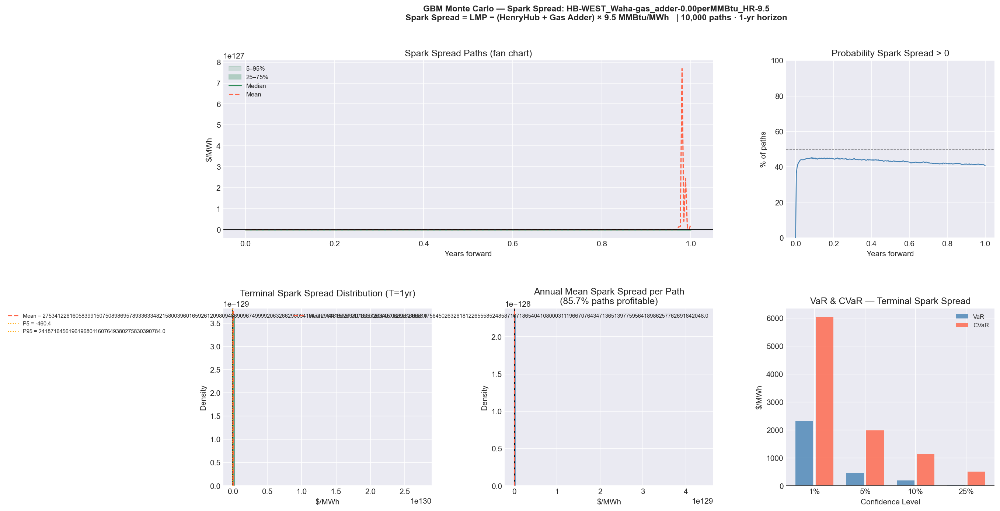
The West site uses Waha Hub (West Texas) gas pricing rather than Henry Hub, with no O&M adder (West does not have a generator in this analysis). This chart shows the hypothetical West spark spread if a generator were deployed there. The much wider confidence interval vs Houston reflects σ_WEST = 62%/yr. Included for completeness and to illustrate why West LMP vol is the dominant input to all spread calculations at that site.
Reference scenario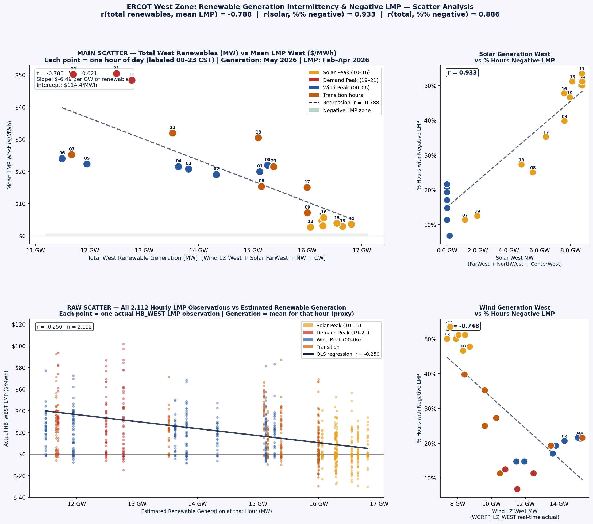
Six-panel scatter plot showing the relationship between solar and wind generation (MW) against HB-WEST LMP for each 4-hour block. The strongly negative slope during solar hours (10:00–16:00) gives r = −0.80. As solar output rises, LMP falls, and when solar generation is highest, LMP frequently goes negative. The relationship is much weaker during night hours when wind is the primary driver.
Drives negative prices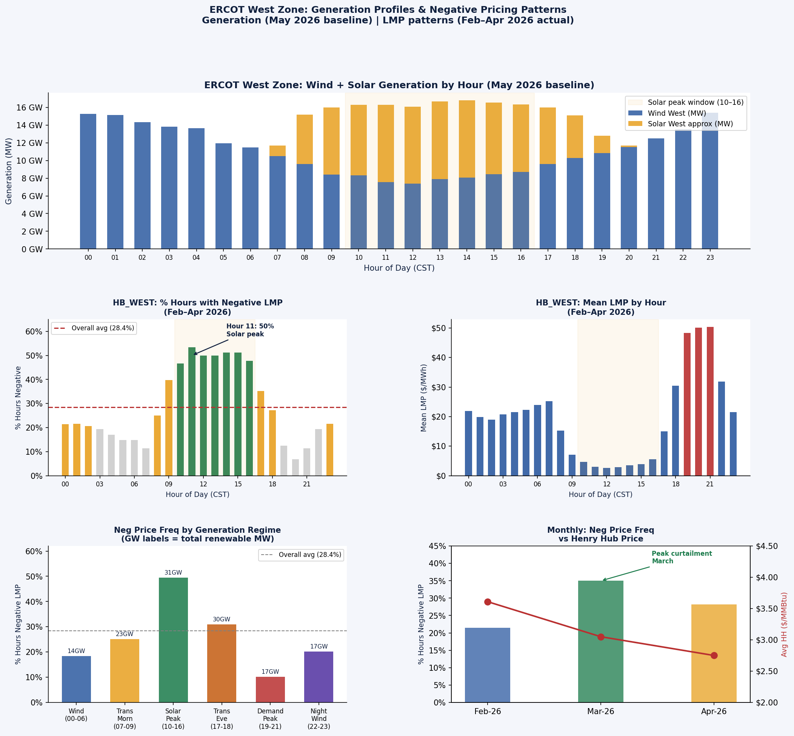
Dual-axis chart: mean MW of solar and wind generation by hour of day (bars) overlaid with % of hours recording negative LMP (line). Solar peaks at 12:00–14:00; negative price frequency peaks at 11:00–15:00 (47–53%). Night wind maintains a 20–34% negative price frequency. The 10:00–16:00 window is the core charging and training window identified by LSMC.
Defines training window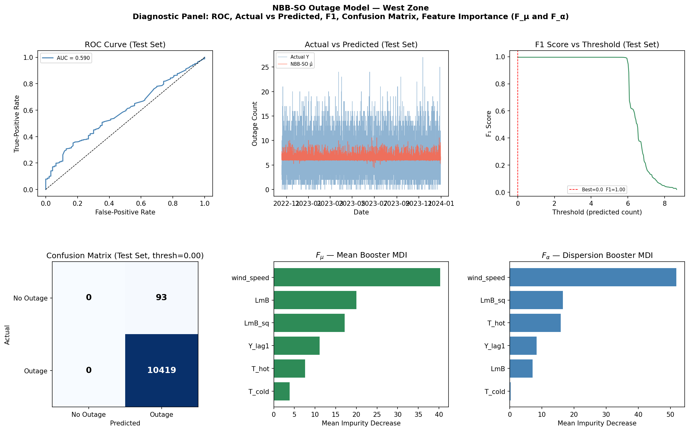
Six-panel diagnostic for the West zone model (trained on 2018–2023 ERCOT data). Includes ROC curve, actual vs predicted outage counts, F1 optimal threshold, confusion matrix, and Mean Decrease Impurity (MDI) feature importance for both F_μ (mean count) and F_α (overdispersion) classifiers. wind_speed is the dominant feature in both F_μ and F_α at West, a direct link between cheap power conditions and high outage risk.
Wind = cheap power AND outage risk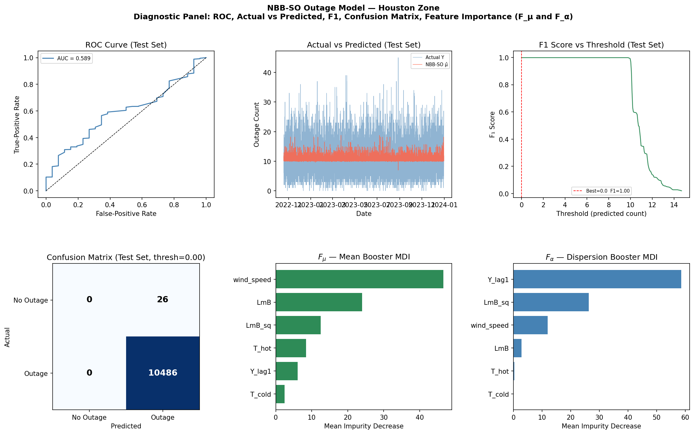
Same diagnostic panels for Houston. Feature importance is more distributed across temperature, humidity, and load variables, rather than wind-dominated like West. Houston outage patterns are driven more by demand-side stress (heatwaves, demand spikes) than by renewable generation events. This means the training schedule at Houston does not carry the same simultaneous cheap-power / high-risk tension as at West.
NBB-SO Diagnostic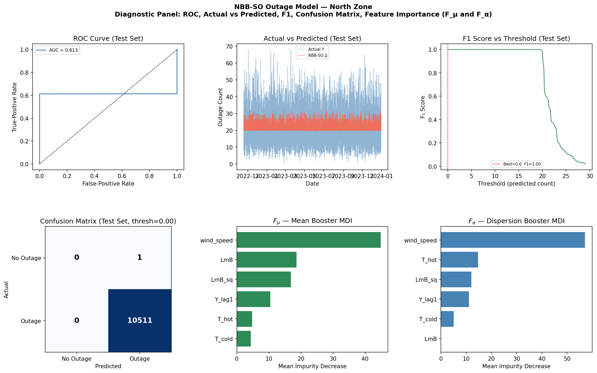
North Zone diagnostics included for completeness. The North zone (Dallas/Fort Worth area) shows intermediate characteristics between Houston and West. Ice storm events (2021 context) have elevated the historical overdispersion estimate. Not a primary site in this analysis but informs ERCOT-wide grid stress correlation structures.
NBB-SO Diagnostic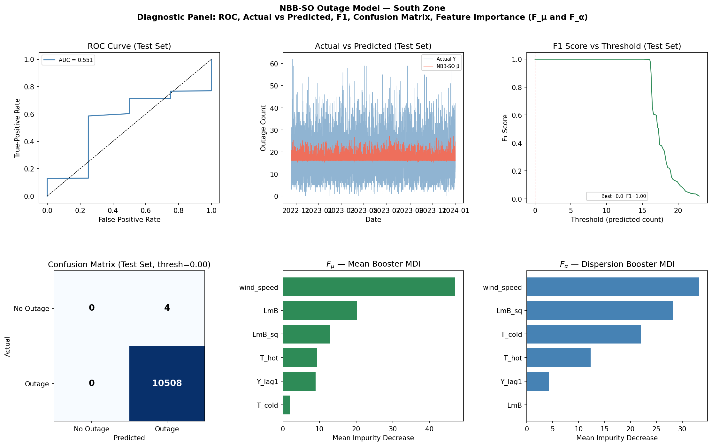
South Zone (San Antonio / Laredo area) diagnostics. Temperature variables dominate at South, the warmest zone in ERCOT with the highest cooling load. Outage risk is most strongly correlated with peak demand hours (15:00–18:00) rather than generation intermittency. Provides a useful contrast to West zone's wind-dominated profile.
NBB-SO Diagnostic